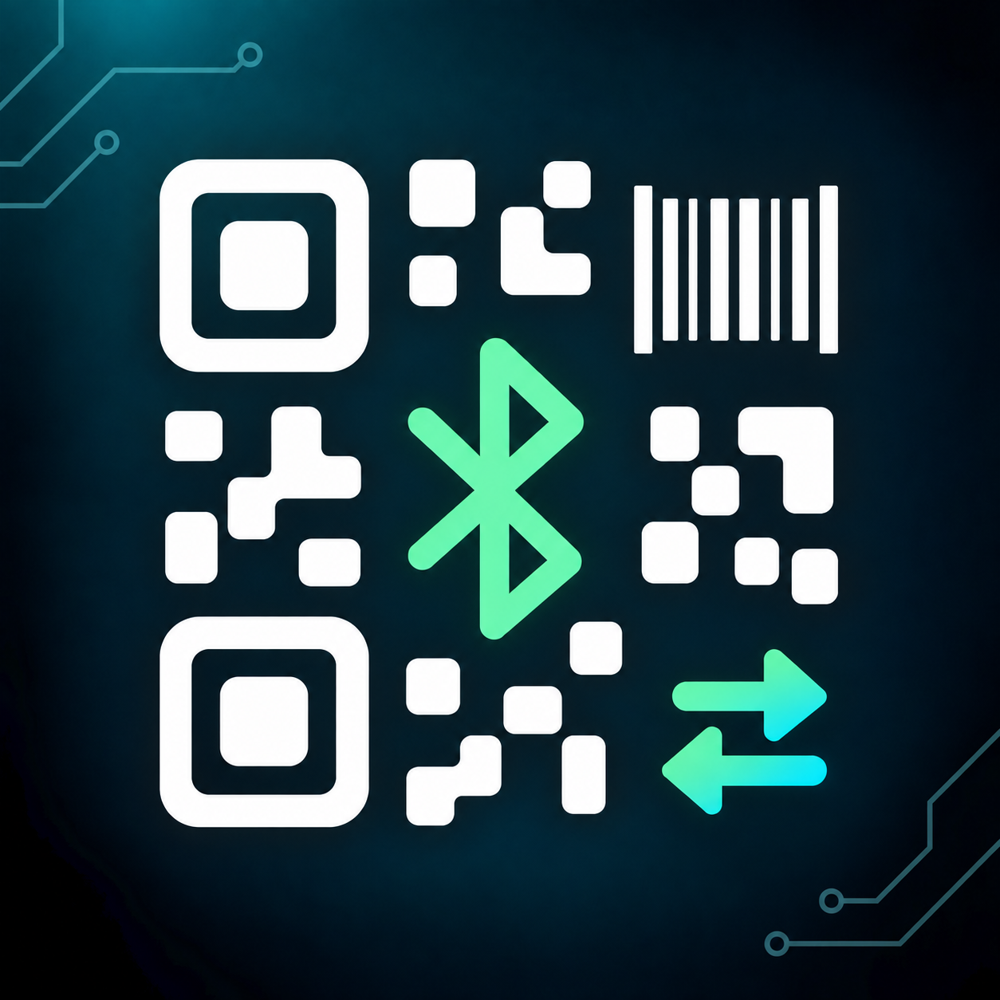

REGA
Animales, aretes, fotografías, genealogía y seguimiento sanitario en tu teléfono. Registros locales y respaldos para conservar tu información.
Herramientas nacidas de problemas reales. Del registro ganadero al envío de códigos a tu PC: menos pasos, más control.
StroyApps es mi laboratorio de software. Aquí las ideas se construyen, se prueban en teléfonos reales y se corrigen hasta que funcionan en el trabajo de cada día.
Proyectos en crecimiento, con información propia, soporte y políticas de privacidad independientes.
Animales, aretes, fotografías, genealogía y seguimiento sanitario en tu teléfono. Registros locales y respaldos para conservar tu información.

Lee QR y códigos de barras y envíalos por Bluetooth como un teclado. Personaliza las acciones después de cada lectura y exporta tu historial.
Una interfaz puede verse bien y aun así estorbar. Primero, resolver el problema; después, quitar la fricción.
Registrar mejor, evitar trabajo repetido y tener claro qué está pasando.
Probar conexiones, errores y respaldos; no solo el recorrido en el que todo sale bien.
Escuchar los reportes, corregir detalles y seguir construyendo sobre lo que ya funciona.
Indica la aplicación, su versión y qué ocurrió. Evita enviar datos personales o registros sensibles.